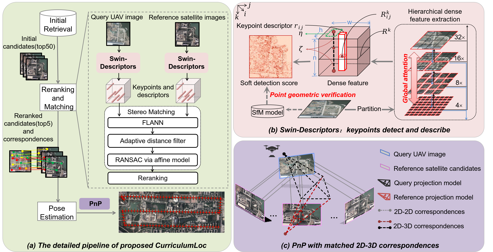
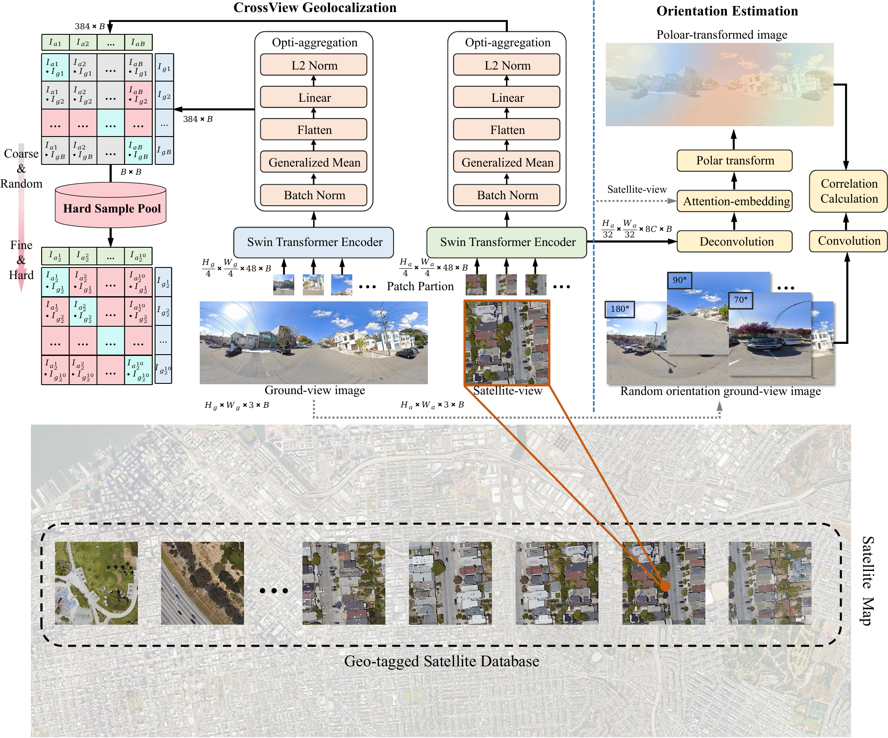

CurriculumLoc
Abstract
Visual geolocalization is a cost-effective and scalable task that involves matching one or more query images, taken at some unknown location, to a set of geotagged reference images. Existing methods, devoted to semantic features representation, evolving toward robustness to a wide variety between query and reference, including illumination and viewpoint changes, as well as scale and seasonal variations. However, practical visual geolocalization approaches need to be robust in appearance changing and extreme viewpoint variation conditions, while providing accurate global location estimates. Therefore, inspired by curriculum design, human learn general knowledge first and then delve into professional expertise. We first recognize semantic scene and then measure geometric structure. Our approach, termed CurriculumLoc, involves a delicate design of multistage refinement pipeline and a novel keypoint detection and description with global semantic awareness and local geometric verification. We rerank candidates and solve a particular cross-domain perspective-n-point (PnP) problem based on these keypoints and corresponding descriptors, position refinement occurs incrementally. The extensive experimental results on our collected dataset, TerraTrack and a benchmark dataset, ALTO, demonstrate that our approach results in the aforementioned desirable characteristics of a practical visual geolocalization solution. Additionally, we achieve new high recall@1 scores of 62.6% and 94.5% on ALTO, with two different distances metrics, respectively.
Pipeline Overview
Demo Video
Abstract
Cross-view image-based geolocalization enables accurate, drift-free navigation without external positioning signals, crucial for UAV delivery and disaster relief. However, existing research primarily focuses on ground panoramic images with known orientations, while real-world scenarios involve unknown orientations and limited field of view (FoV), creating a research-application gap. We introduce OriLoc, an innovative cross-view geolocalization method integrating sophisticated orientation estimation for limited FoV and arbitrary orientation scenarios. Our approach employs a dual-weighted soft-margin triplet loss with hard sample mining to extract discriminative features. Additionally, we develop an orientation estimation module using convolution-based sliding windows to assess similarity between satellite-view and query embeddings. The method demonstrates superior performance on three challenging datasets spanning commercial, residential, urban, and suburban areas across two continents. Results show that hard sample mining combined with appropriate learning objectives significantly enhances geolocalization for limited FoV and orientation-free images. Our orientation estimation module achieves remarkable accuracy when integrated with attention embeddings prior to polar transformation. Code and trained models are publicly available on https://github.com/boni-hu/OriLoc.
Pipeline Overview
Example Results
Results may overlap - zoom in to see them all. Click on an image in the map to zoom in.
Hi²-GSLoc
Abstract
Visual relocalization, which estimates the 6-degree-of-freedom (6-DoF) camera pose from query images, is fundamental to remote sensing and UAV applications. Existing methods face inherent trade-offs: image-based retrieval and pose regression approaches lack precision, while structure-based methods that register queries to Structure-from-Motion (SfM) models suffer from computational complexity and limited scalability. These challenges are particularly pronounced in remote sensing scenarios due to large-scale scenes, high altitude variations, and domain gaps of existing visual priors. To overcome these limitations, we leverage 3D Gaussian Splatting (3DGS) as a novel scene representation that compactly encodes both 3D geometry and appearance. We introduce Hi2-GSLoc, a dual-hierarchical relocalization framework that follows a sparse-to-dense and coarse-to-fine paradigm, fully exploiting the rich semantic information and geometric constraints inherent in Gaussian primitives. To handle large-scale remote sensing scenarios, we incorporate partitioned Gaussian training, GPU-accelerated parallel matching, and dynamic memory management strategies. Our approach consists of two stages: (1) a sparse stage featuring a Gaussian-specific consistent render-aware sampling strategy and landmark-guided detector for robust and accurate initial pose estimation, and (2) a dense stage that iteratively refines poses through coarse-to-fine dense rasterization matching while incorporating reliability verification. Through comprehensive evaluation on simulation data, public datasets, and real flight experiments, we demonstrate that our method delivers competitive localization accuracy, recall rate, and computational efficiency while effectively filtering unreliable pose estimates.